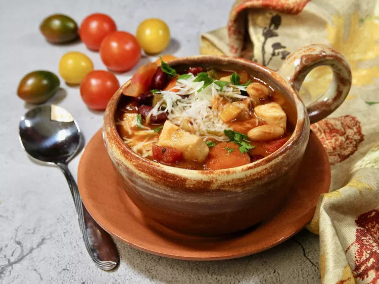

Home
Chicken Soup

Ingredients
- 4 tablespoons olive oil, divided
- ½ pound skinless, boneless chicken breast, cut into bite-sized pieces
- 1 cup chopped onion
- 2 cloves garlic, minced
- ½ cup sliced carrot
- ½ cup chopped celery
- 5 cups chicken stock
- 1 (14.5 ounce) can diced tomatoes with basil, garlic, and oregano
- 1 (15.5 ounce) can cannellini beans, drained and rinsed
- 1 (15.5 ounce) can kidney beans, drained and rinsed
- 1 (6 ounce) can tomato paste
- 1 small zucchini, quartered lengthwise and cut into 1/2 inch slices
- ½ cup frozen cut green beans,
- 1 teaspoon Italian seasoning
- ½ cup ditalini pasta
- salt and freshly ground black pepper to taste
- ⅓ cup grated Parmesan cheese, or more to taste (Optional)
- 2 teaspoons chopped fresh parsley